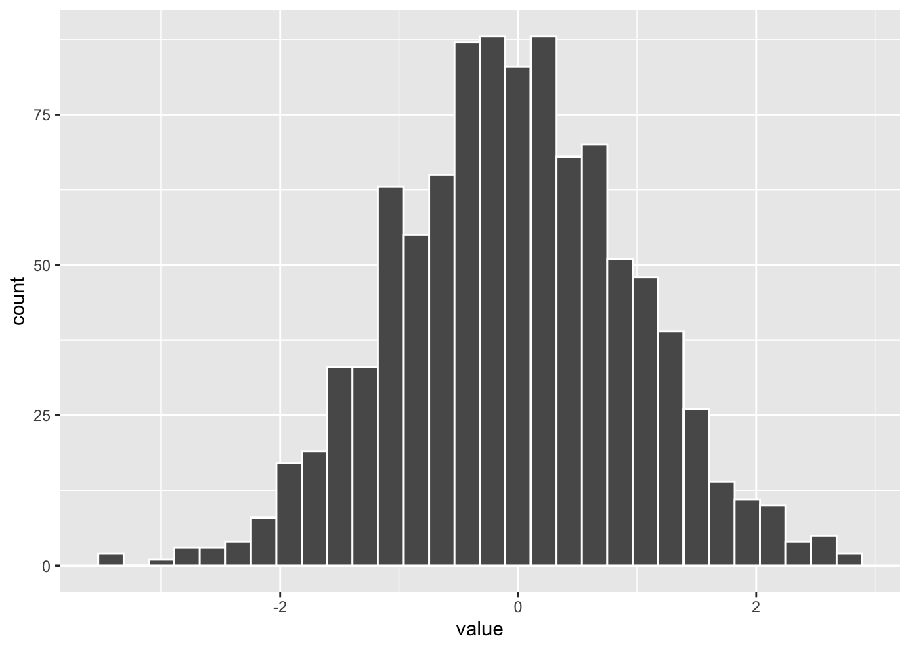
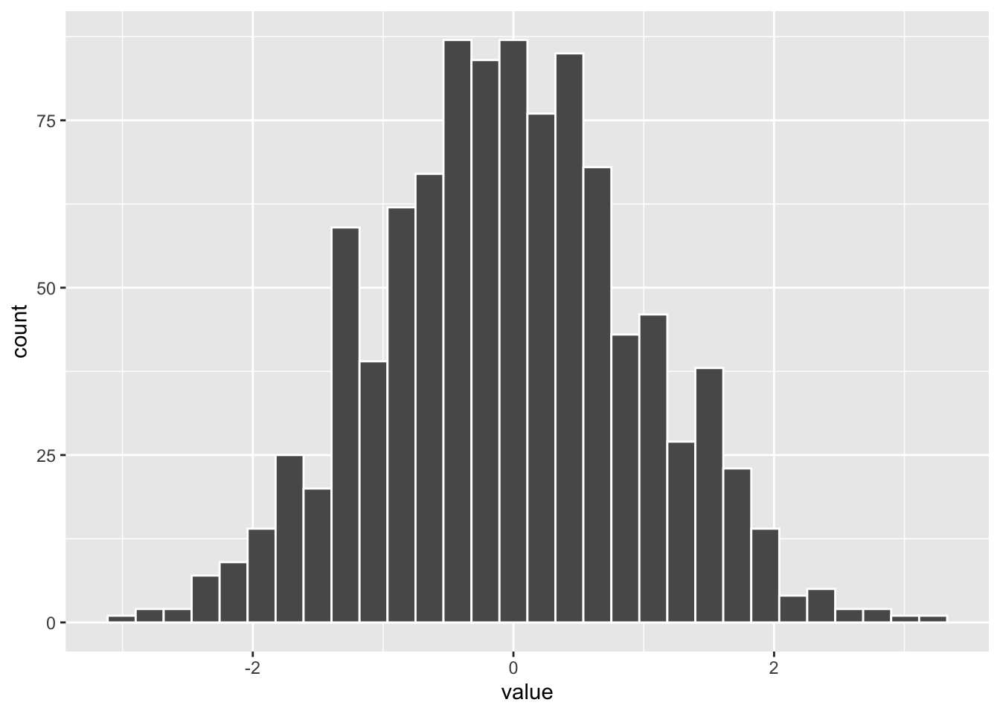

Saludos
Estoy enamorado de RMarkdown
Para una lista ordenada se usa números y i).
Un texto sin numeración………….
El texto que sigue tiene unas palabras en italico, para resaltar un tema o es una palabra en otro idioma.
Otro método de resaltar un texto es enegracerlo, El titulo del libro que estoy leyendo al momento es Seven Japanese Tales de Junichiro Tanizaki.
Para añadir lineas antes de un texto se usa – el texto, o tres para uno más largo — otro texto
Para añadir una ecuación matemática en el texto como parte de una oración se usa un signo de dolar antes y después de la ecuación deseado \(x^2\), y esta ecuación se incluye parate de la oración.
Para que la ecuación matemática aparezca centralizado en el documento se usa dos signo de dolares antes y después. Por ejemplo la formula para varianza es la siguiente, \[\sigma^2=\frac{\sum_{i=1}^{n}(x_i-\mu_x)}{n-1}\] Nota que se usa latex para hacer la formula.
library(tidyverse)mi_tabla=tribble(
~Edad, ~Genero, ~Pueblo_nacido,~Nueva_variable,
23, "F", "Caguas", 1,
190, "M", "San Juan", 2
)
mi_tabla## # A tibble: 2 × 4
## Edad Genero Pueblo_nacido Nueva_variable
## <dbl> <chr> <chr> <dbl>
## 1 23 F Caguas 1
## 2 190 M San Juan 2x=as_tibble(rnorm(1000, 0,1)) # Creamos un conjunto de datos
x## # A tibble: 1,000 × 1
## value
## <dbl>
## 1 -0.0407
## 2 -0.0646
## 3 -0.573
## 4 -1.04
## 5 0.379
## 6 0.430
## 7 0.883
## 8 0.829
## 9 -0.268
## 10 0.998
## # … with 990 more rowsggplot(x, aes(value))+
geom_histogram(colour="white")## `stat_bin()` using `bins = 30`. Pick better value with `binwidth`.
x=as_tibble(rnorm(1000, 0,1)) # Creamos un conjunto de datos
x## # A tibble: 1,000 × 1
## value
## <dbl>
## 1 0.626
## 2 0.122
## 3 -1.25
## 4 -0.510
## 5 0.997
## 6 -0.205
## 7 -0.457
## 8 -1.56
## 9 0.956
## 10 -0.949
## # … with 990 more rowsggplot(x, aes(value))+
geom_histogram(colour="white")## `stat_bin()` using `bins = 30`. Pick better value with `binwidth`.
Muchas veces uno quiere resaltar un texto poniendolo en un bloque para demostrar un idea, una definicion y concepto. Por ejemplo: Analítica Fundación, Inc., es una corporación sin fines de lucro incorporada bajo las leyes del Estado Libre Asociado de Puerto Rico en el 2018. Su especialidad es el análisis de datos. Su objetivo principal es proveer todo tipo de servicios educativos, de investigación y capacitación profesional, y el desarrollo de pensamiento crítico en el campo de la analítica.
En otra palabra exactamente como parece en el texto. Por ejemplo, quiero este texti que se visualiza exactamente como aqui _ - sin que se modifica el formato del texto.
Al contrario si lo escribo sin las comillas aqui _ - sin que se modifica el fromato del texto se ve diferente.
Esto es perfecto para poesia
`une volée d'outardes
se pointe
a l'horizon'
la première lettre
de mon prénom
traverse le ciel`
Poesie de Véronique Sylvain, Premier quart, 2019.
NOTE: hay dos alternativas
En la primera alternativa se ve web enlace https://raymondltremblay.github.io/ANALITICA/index.html
En la segunda alternativa no se ve el enlace. Por ejemplo se puede poner un comentario como lo siguiente. Para conectarse al website de Analítica presione aqui Analitica